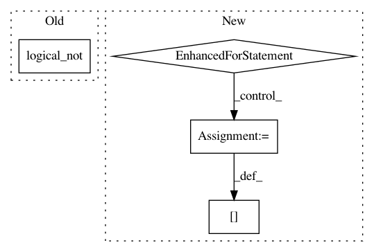

aadd7d651389f213aaf33b08ab6f533a3ecc59db,cellprofiler/modules/correctilluminationcalculate.py,CorrectIlluminationCalculate,preprocess_image_for_averaging,#CorrectIlluminationCalculate#Any#,593
Before Change
(self.block_size.value,
self.block_size.value))
if orig_image.has_mask:
labels[np.logical_not(orig_image.mask)] = -1
minima = fix(scind.minimum(pixels, labels, indexes))
min_block = np.zeros(pixels.shape)
min_block[labels != -1] = minima[labels[labels != -1]]
After Change
minima = fix(scind.minimum(pixels, labels, indexes))
min_block[labels != -1] = minima[labels[labels != -1]]
else:
for i in range(pixels.shape[2]):
minima = fix(scind.minimum(pixels[:,:,i], labels, indexes))
min_block[labels != -1, i] = minima[labels[labels != -1]]
avg_image = cpi.Image(min_block, parent_image = orig_image)
return avg_image
def apply_smoothing(self, image, orig_image=None):
In pattern: SUPERPATTERN
Frequency: 3
Non-data size: 4
Instances
Project Name: CellProfiler/CellProfiler
Commit Name: aadd7d651389f213aaf33b08ab6f533a3ecc59db
Time: 2011-08-04
Author: leek@1fc53939-2000-0410-845c-e8453a809027
File Name: cellprofiler/modules/correctilluminationcalculate.py
Class Name: CorrectIlluminationCalculate
Method Name: preprocess_image_for_averaging
Project Name: vc1492a/PyNomaly
Commit Name: 2526879b1f941c887eeb24a267b5ea010e20d5d7
Time: 2017-12-17
Author: vc1492a@gmail.com
File Name: PyNomaly/loop.py
Class Name: LocalOutlierProbability
Method Name: _ssd
Project Name: sebp/scikit-survival
Commit Name: 0bed328fc01823df9a99af2b96441398fd35c938
Time: 2019-04-15
Author: sebp@k-d-w.org
File Name: sksurv/metrics.py
Class Name:
Method Name: _get_comparable